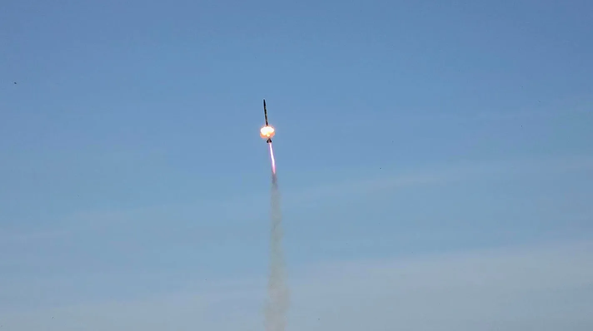
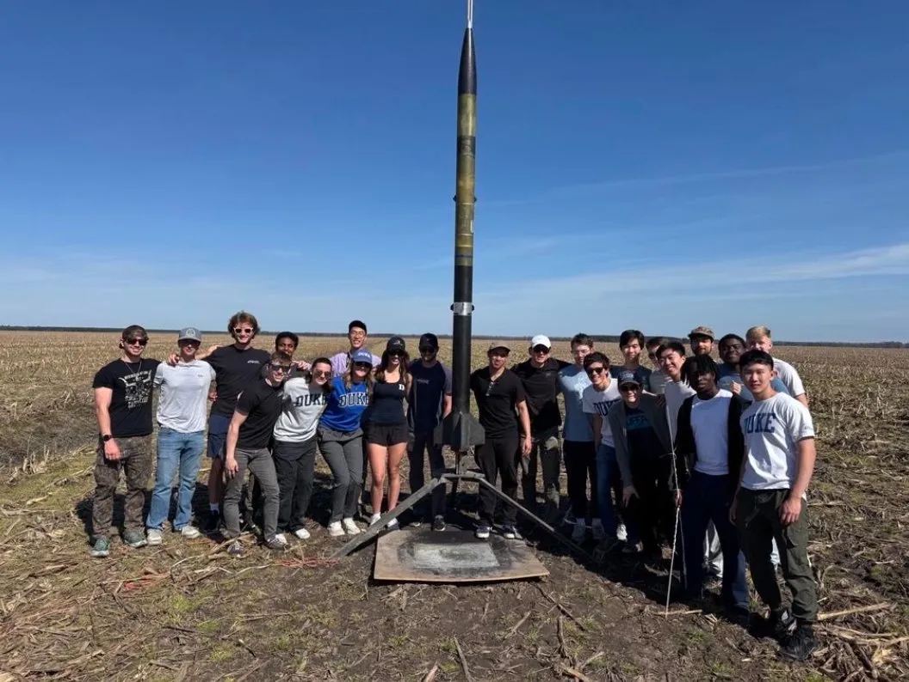
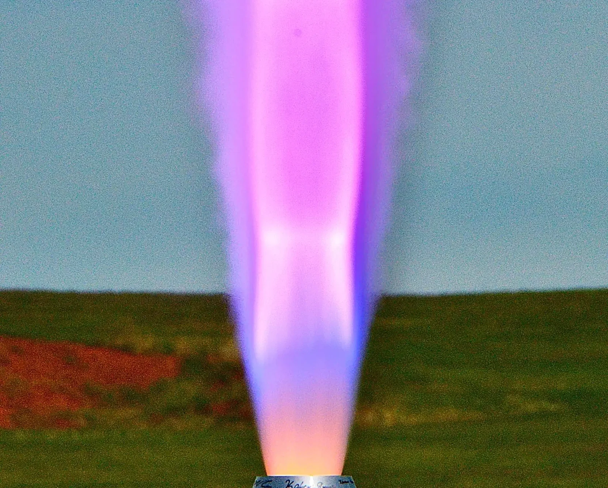
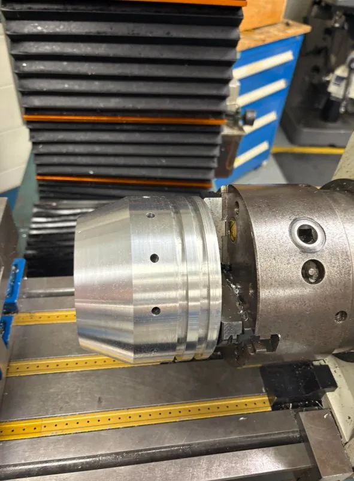
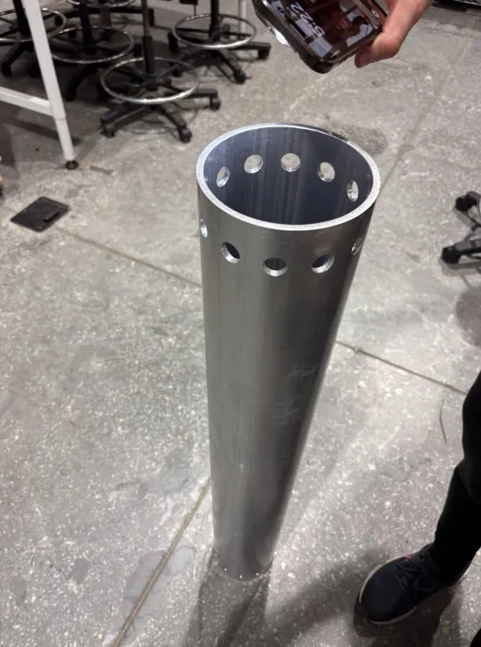
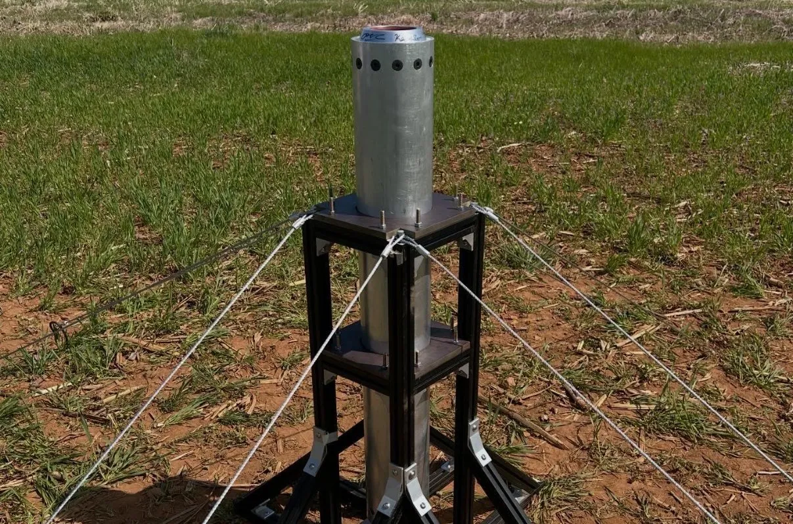
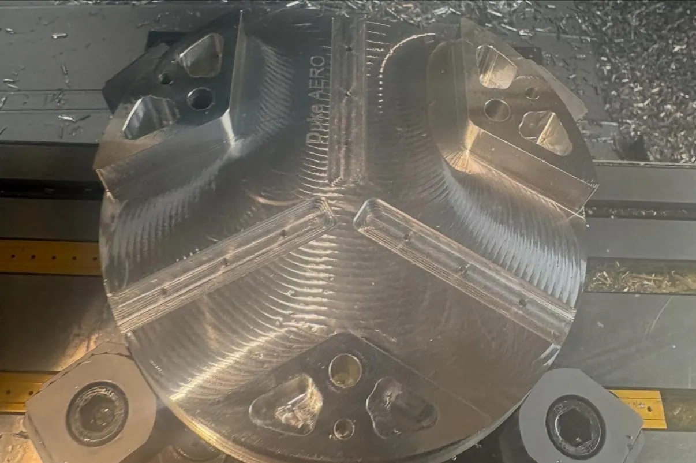

Duke Aero Club
Solid Propulsion & Structures — Duke Rocketry



My Role
Member of the solid propulsion team and structures team. Contributed across motor development, airframe fabrication, and machined hardware for the 2025–26 rocket.
Duke Aero is Duke University's rocketry club, competing in high-power rocketry and developing student-designed and built rockets from propellant to airframe. I joined as a freshman and have been working across both solid propulsion and structures.
Solid Propulsion
- Helped machine the nozzle casing on a manual lathe
- Assisted with propellant grain mixing
- Participated in static hot fire test of the motor
Structures & Machining
- Carbon fiber body tube wraps — cut pre-impregnated carbon fiber and assisted with layup
- Machined components for the canards and air brake housing



